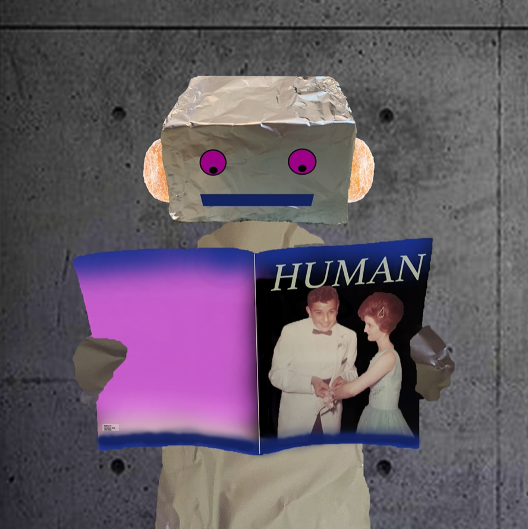
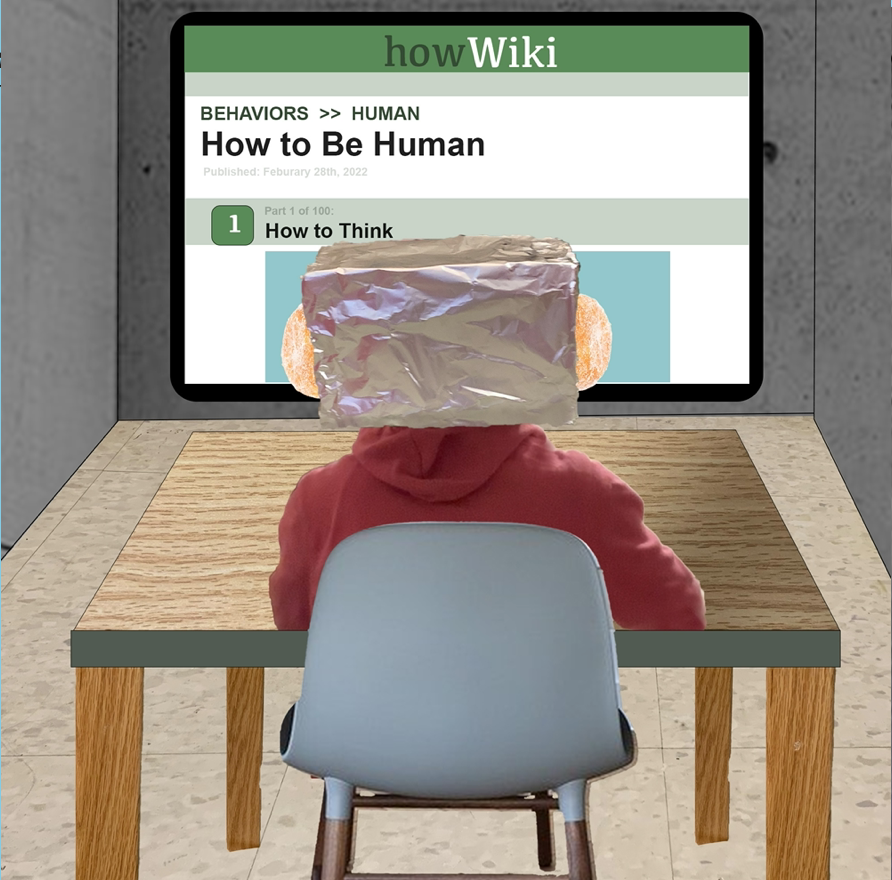
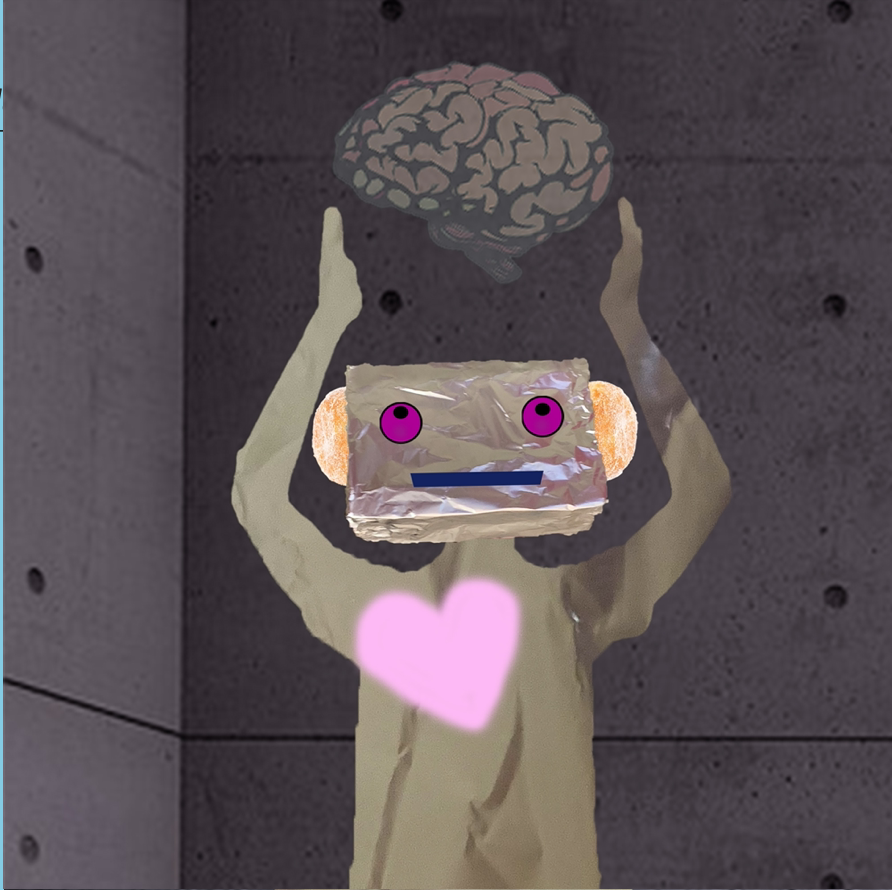

Theme: Posthuman Title: Becomming Human
  
Artist Statement:
This work shows a robot character who is curious about human-kind. After reading a
magazine about human life, they are inspired and want to become human themselves.
After reading up on what makes a human, they learn that the true way to become human
is to use your brain and you heart. To create the head of the robot I photographed a
shoebox wrapped in foil from various angles. For the body of the robot I used photos
of myself to create the body of the robot. Fun fact: The humans on the magazine in
the first image are my grandparents at their high school prom!
Back